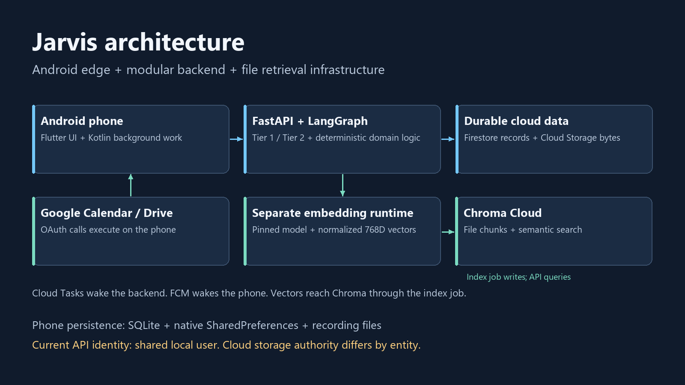

Jarvis architecture explained
Code review · 11 October 2026 · English synthesized narration · approximately 8.0 minutes
Chapters
Architecture at a glance

This explains the inspected local code, not a live deployment audit. Caption timestamps are estimated within each measured narration scene.